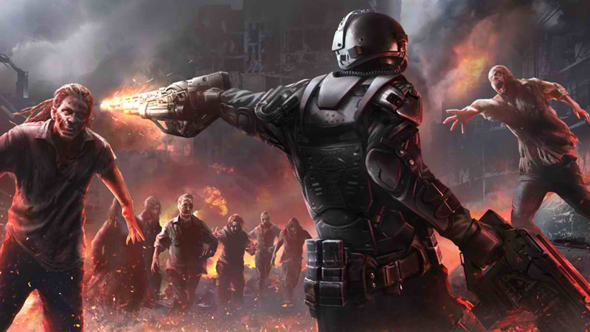
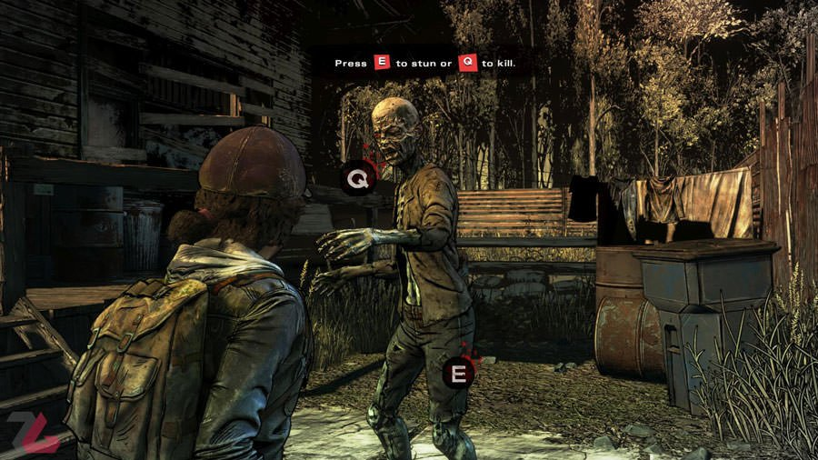
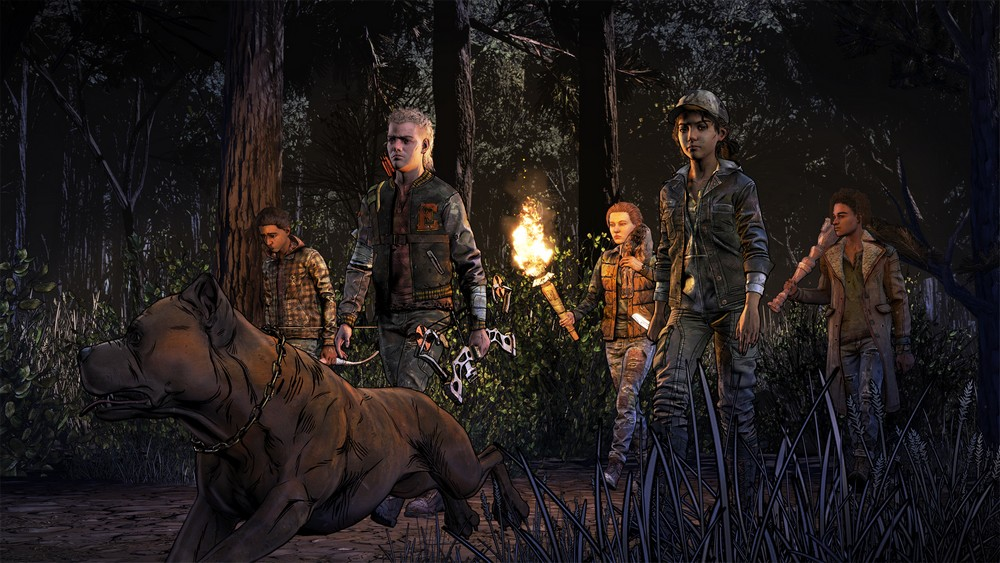

zombie shooter

این بازی بر اساس سری کتابهای کمیک مردگان متحرک، به نویسندگی رابرت کرکمن، ساخته شدهاست. این بازی شامل پنج قسمت است که بین آوریل تا نوامبر ۲۰۱۲ (میلادی)، منتشر شدهاست. در حال حاضر، این بازی بر روی ایکسباکس ۳۶۰، ویندوز، پلیاستیشن ۳، اواس ده، آیاواس و پلیاستیشن ویتا قابل استفاده است. معدودی از شخصیتهای بازی از کتاب کمیک بازی، گرفتهشدهاند؛ در حالی که بیشتر این شخصیتها اینگونه نیستند. داستان، تحت تأثیر گفتگوهای بین چند نفر و اقدامات سریع طرف مقابل قرار دارد. همچنین انتخابهایی که بازیکنان در جریان بازی انجام میدهند، مهمترین مسئله تأثیرگذار در روند این بازی است و داستان بازی بر اساس این انتخابها شکل میگیرد.
داستان این بازی دربارهٔ استاد تاریخ دانشگاهی به نام «لی اورت» است، که به دلیل قتل سناتوری که با زن وی رابطه داشته، دستگیر میشود. در هنگام انتقال او به زندان، ماشین حمل او با موجودی به نام زامبی برخورد میکند؛ در ادامه داستان، او با دختری به نام کلمنتان آشنا میشود و به دلیل وجود زامبیها، مجبور میشود که او را با خود همراه کند. شخصیت اصلی و قابل کنترل بازی، «لی اورت» نام دارد. «کلمنتان»، جزو دیگر شخصیتهای پایه و اصلی بازی است. لی اورت، به عنوان تنها شخصیت قابل کنترل بازی، مجبور میشود برای نجات کلمنتان دست به کارهایی بزند، تا او را از خطرها دور کند؛ و این کارها باعث شکلگیری داستان مردگان متحرک و در آخر داستان باعث بهوجودآمدن چند پایان در بازی میشود. همچنین این بازی قابلیت چندنفره شدن یا آنلاین بازی کردن را نیز ندارد.

